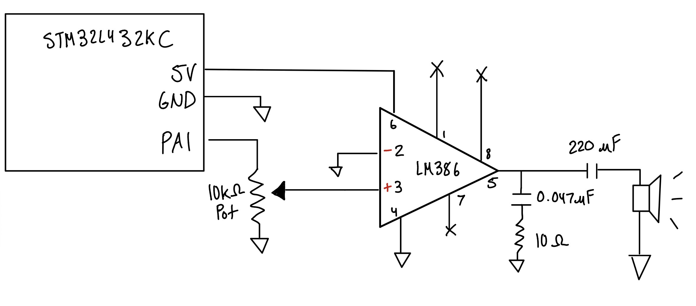

Lab 4: Digital Audio
Joaquin Gonzalez-Salgado | jgonzalezsalgado@hmc.edu | May 31, 2026
Introduction
In this lab, a hardware timer of the STM32L432KC MCU was used to drive an 8-ohm speaker to play music. The timer was configured to toggle a GPIO pin at a specified frequency, generating a square wave corresponding to each musical note, and also to produce millisecond delays for note durations. The system was tested by playing Für Elise, and as an optional piece, Fallen Down was also implemented.
Design and Testing Methodology
Lab Overview
A single timer, TIM2, was used for both frequency generation and duration control. The ARR register is reloaded each note to set the correct half-period, and the GPIO pin is flipped on every update event, producing a square wave. For rests, the GPIO pin is held low and ARR is set for a 1 ms tick, looping for the required number of milliseconds.
All peripheral registers of RCC, GPIO, and TIM2 were manually defined via #define using base addresses and offsets from the STM32L432KC Reference Manual. No CMSIS headers were used!
Clock and Timer Configuration
The MCU runs on the default 4 MHz clock. TIM2 is clocked from APB1ENR1 and is configured with a prescaler (PSC) of 3, dividing the 4 MHz clock by 4 to produce a 1 MHz timer clock!:
\[ f_{\text{timer}} = \frac{4\,\text{MHz}}{PSC + 1} = \frac{4\,\text{MHz}}{4} = 1\,\text{MHz} \]
Frequency Generation
For a note at frequency f, the GPIO pin must be toggled twice per period (once high, once low), the timer update event must occur at 2f, so the GPIO toggles at 2f and the resulting square wave has frequency f. Then, we can write an expression for the Auto-Reload Register ARR:
\[ f_{\text{out}} = \frac{f_{\text{clock}}}{\text{ARR}+1} = \frac{1{,}000{,}000}{\text{ARR}+1} \]
Solving for ARR, we get:
\[ \text{ARR} = \frac{f_{\text{timer}}}{2f} - 1 = \frac{1{,}000{,}000}{2f} - 1 \]
Duration Control (Rests)
For rests (freq == 0), the delay function sets ARR to produce a 1 ms tick:
\[ \text{ARR}_{\text{delay}} = \frac{1{,}000{,}000}{1{,}000} - 1 = 999 \]
Calculations
First, we need to calculate the possible range of frequencies given the TIM2 and PSC setup. Plugging in the maximum and minimum ARR can help us find the frequency range. Note that because TIM2 is a 32-bit timer, ARR_max = \(2^{32} - 1\) = 4,294,967,295. ARR_min is simply 0. Frequency range (TIM2, PSC = 3, timer clock = 1 MHz):
\[ f_{\text{min}} = \frac{f_{\text{timer}}}{2 \times (\text{ARR}_{\text{max}} + 1)} = \frac{1{,}000{,}000}{2 \times 2^{32}} \approx 0.000116\,\text{Hz} \]
\[ f_{\text{max}} = \frac{f_{\text{timer}}}{2 \times (\text{ARR}_{\text{min}} + 1)} = \frac{1{,}000{,}000}{2 \times 1} = 500{,}000\,\text{Hz} \]
Both values comfortably cover the required 220–1000 Hz range.
Duration range (1 ms tick loop):
The minimum supported duration is 1 ms (one loop iteration). The maximum is bounded by the uint32_t loop counter in the delay function:
\[ t_{\text{max}} = (2^{32} - 1)\,\text{ms} \approx 4.3 \times 10^6\,\text{s} \approx 49.7\,\text{days} \]
This is far more than sufficient for any musical duration.
Frequency accuracy (220–1000 Hz):
Because ARR is an integer, rounding introduces a small error. Here are some calculatiions checking the error between desired and actual frequencies
At 220 Hz: \[ \text{ARR} = \left\lfloor\frac{1{,}000{,}000}{2 \times 220}\right\rfloor - 1 = 2271\] \[f_{\text{actual}} = \frac{1{,}000{,}000}{2 \times 2272} \approx 220.07\,\text{Hz} \qquad (0.03\%\,\text{error}) \]
At 1000 Hz: \[ \text{ARR} = \frac{1{,}000{,}000}{2 \times 1000} - 1 = 499\] \[f_{\text{actual}} = \frac{1{,}000{,}000}{2 \times 500} = 1000.00\,\text{Hz} \qquad (0.00\%\,\text{error}) \]
All frequencies in the 220–1000 Hz range are within 0.10% of their target, well within the 1% requirement.
Technical Documentation
The source code for the project can be found in the associated GitHub Repo.
PA1 was configured as a general-purpose output by enabling GPIOA via RCC->AHB2ENR. TIM2 was enabled via RCC->APB1ENR1. All register access were manually defined struct typedefs, meaning no CMSIS headers! Very baremetal C code.
Lab 4 Wiring Schematic // Joaquin Gonzalez-Salgado // June 3rd 2026

The PA1 output was connected to the non-inverting input of the LM386 amplifier. The LM386 was powered from the 3.3 V MCU supply, and its output drove the 8-ohm speaker directly. A 10 kΩ potentiometer between PA1 and the LM386 input provided adjustable volume!
Conclusion
The design successfully met all lab requirements. Für Elise played at the correct tempo with all pitches accurate to well within 1% across the full 220–1000 Hz range, as verified by the ARR calculations above. All rests were rendered as silence for the correct durations. The optional composition Fallen Down also played correctly! And the Potentiometer did vary the volume as intended.
This lab took approximately 15 hours to complete. The most time-consuming parts were navigating the reference manual to find the correct register offsets, and understanding C code in a more thorough way.
AI Prototype Summary
The purpose of the AI Prototype is to experiment with utilizing AI as a coding assistant, and analyze the quality, speed, and precision that an LLM can generate code. The prompt for this week is shown below:
Prompt: What timers should I use on the STM32L432KC to generate frequencies ranging from 220Hz to 1kHz? What’s the best choice of timer if I want to easily connect it to a GPIO pin? What formulae are relevant, and what registers need to be set to configure them properly?
Reflection:
This week is Claude Sonnet. Claude Sonnet claimed that the following timers would work for generating 220 Hz to 1kHz frequencies: TIM1, TIM2, TIM15, and TIM16. This makes sense, as I had used TIM2. It chose TIM2 as the best option due to its resolution, # of channels, and ease of accessibility.
It also gave the following formula:
\[ f_{output} = \frac{f_{TIMx\_CLK}}{(PSC + 1) \times (ARR + 1)} \]
with an example for 440 Hz (A4) with PWM. It also provided the maximum and minimum ARR, which it stated were 4544 and 999 for a given PSC of 79. Not sure how accurate that is, as I did not use that PSC value.
Claude Sonnet also provided the correct register configuration, and how to enable the clocks with RCC, and even configure the GPIO pin! Overall the LLM returned mostly the correct information, however it was too much information than I asked for.